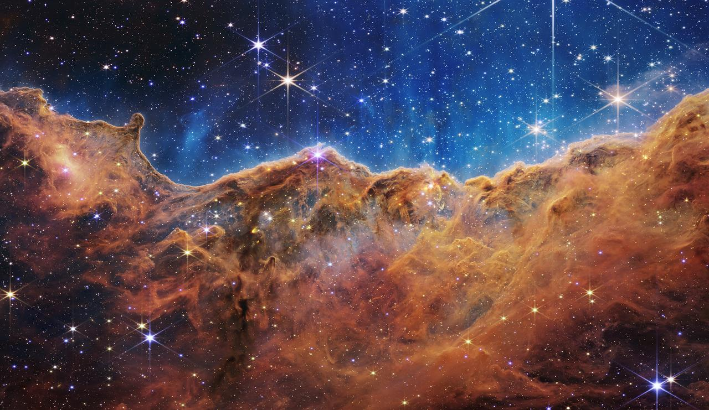

Space: a universe of discovery

Image: NASA/ESA/CSA/STScI.
Beyond Earth's atmosphere lies a vast universe of stars, planets, moons, gas and dust. These objects are separated by immense distances, yet gravity connects them into systems that astronomers can observe and study.
Our nearest natural laboratory is the Solar System. By studying the Sun and its planets, scientists learn how planetary systems form and how worlds can differ from one another.
Our place in the cosmos
Earth is one of eight planets orbiting the Sun. The Sun is one star among the hundreds of billions thought to make up the Milky Way. Beyond our galaxy, observations reveal a universe containing an enormous number of other galaxies.
Three ideas to remember
- Gravity governs the motion of planets, moons and many larger structures.
- Light carries information about objects too distant for spacecraft to visit.
- Space missions and ground-based telescopes provide different, complementary views of the universe.